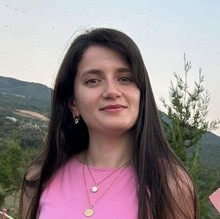

PhD in Computer Science
2026 - PresentUniversité Grenoble Alpes, affiliated with LIG
France
Research focus: Understanding human behavior during natural disasters (flash floods) and integrating behavioral aspects into agent-based models. Development of serious games for disaster preparedness and decision-making support.
Master's Degree in MIAGE (Innovative Information Systems)
2023 - 2025Université Toulouse Capitole
France
Master 1 Grade: 14.8 / 20
Related Subjects Covered:
- Data Analytics & Business Intelligence
- AI & Logical Reasoning (Computational Intelligence)
- Project Management & Entrepreneurship
- Research Workshop
Term Projects:
- Analysis of TripAdvisor data with Python and PowerBI reporting
- Food and Recipe Recommendation system (FullStack: React & Flask)
- Prediction of diagnosis and dysplasia status using CHU Oral Lesion dataset
Master 2 - Completed: With the distinction of Very Good (Très Bien)
- Sustainable Information Systems
- Internet of Things
- Advanced Topics in Artificial Intelligence
- Innovative Data Management
Term Projects:
- Innovative Data Management 1-week project: Data Analysis in Hadoop
- Advanced Topics in Artificial Intelligence: Build a surrogate model of strategic voting during political elections at national scale
Achievement: Finalist of the GreenScent European Challenge organized in Brussels (2024)
Bachelor's Degree in Mathematics and Informatics Teaching
2014 - 2019Baku Engineering University (former Qafqaz University)
Azerbaijan
Grade: 91.03 / 100
Mathematics Subjects:
- Pure Mathematics, Probability and Statistics
- Applied Mathematics, Differential Equations
Informatics Subjects:
- Fundamentals of Programming, Object-Oriented Programming
- Data Structures and Algorithms, DBMS
- Web Programming and Design
- Computer Systems and Architecture
Education Subjects:
- Educational Psychology, Pedagogy
Thesis Topic: Data Analytics Integration in Banking Industry
Research Intern in Computer Science Applied to Urban Mobility
2025 (April - September)IRIT, Cooperative Multi-agents Systems
France
Subject: Influence of mobilities on Urban Heat Island
Designing a methodological framework to understand traffic impact on UHI during the scarcity of real-world sensor data.
BPM Frontend Developer
2021 - 2023ABB (International Bank of Azerbaijan)
Azerbaijan
- Developing and testing applications
- Analyzing business case tasks and finding optimal solutions to implement
BPM Backend Developer
2018 - 2021Kapital Bank
Azerbaijan
- Developing and optimizing processes according to business needs of the bank
- Supporting branches of the bank with real-time solutions
Teaching Assistant in Engineering For Kids (STEM)
2018 (May - November)Azerbaijan
Teaching engineering concepts through hands-on learning.
No publications yet.